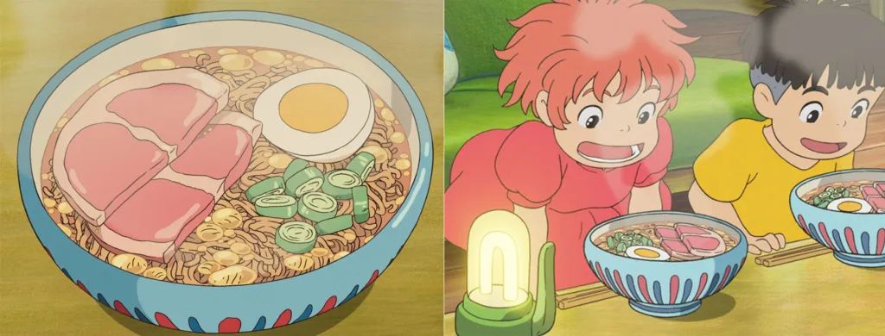

Ponyo's Ramen (Ponyo on the Cliff)
Back to Recipes

A recipe for the bento seen in the iconic Studio Ghibli film, Totoro! Recipe by
Sylvia Wakana.
Ingredients
1 instant ramen noodle packet
any kind you want
1 egg
hard or soft boiled
1 green onion
sliced
1 piece ham
cut in half
2.5 cups water
Instructions
Prep the ingredients: Hard or soft boil the egg and cut in half, slice the green onions, and cut the ham in half.
Boil water in a kettle or on the stove.
Place ramen noodles in a bowl. If your ramen comes with a dry ramen seasoning packet, open and put it in now.
Pour boiling water into the bowl. Cover the bowl and let it sit according to the ramen package instructions (3-5 minutes).
Once cooked uncover and separate noodles using chopsticks or a fork. Mix the water, noodles, and seasoning packet together well.
Top with half of the egg, sliced green onion, and both pieces of cut ham.
Enjoy immediately so the noodles don't get soggy!